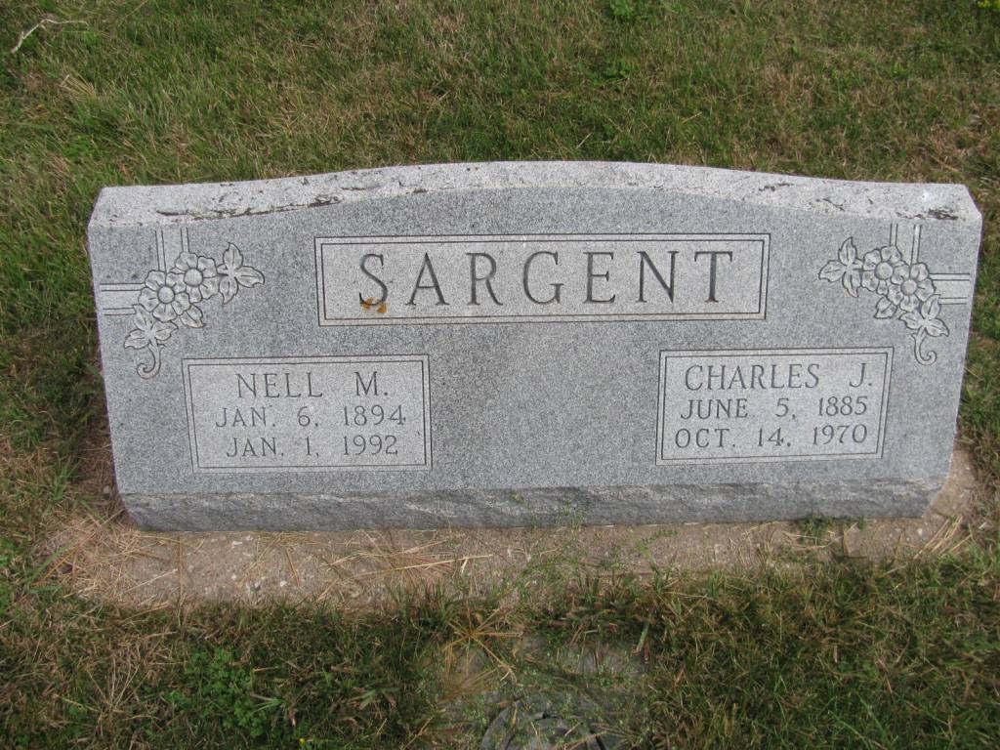
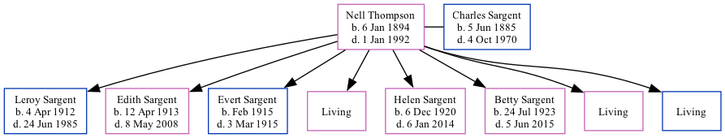

Nell M Sargent (née Thompson) 1894 - 1992
[ Home ] | [ Calendar ] | [ Surnames Index ] | [ Family History ]Nell Thompson, the wife of Charles Jacob Sargent (the third cousin three-times-removed on the mother's side of Nigel Horne), was born in Nebraska, USA on Jan 6, 18941,2,3,4 andhad 8 children, Leroy Charles, Edith M, Evert Wayne, Irene F, Helen N, Betty Jane, Opal J and Sidney.
Throughout her life, she lived in Polk, Nebraska on Jun 1, 19002 and on Jan 1, 19203; and in Osceola, Polk, Nebraska on Apr 8, 19306 and on Apr 1, 19407.
She died on Jan 1, 19924,5 and was buried at Graceland Cemetery, Shelby, Polk, Nebraska after Jan 1, 19925.
Children
- Leroy Charles was born on Apr 4, 1912
- Edith M was born on Apr 12, 1913
- Evert Wayne was born in Feb 1915
- Helen N was born on Dec 6, 1920
- Betty Jane was born on Jul 24, 1923
Citations
- Social Security Death Index - Findmypast
- US Census 1900 - Findmypast (was the daughter of the head of the household)
- US Census 1920 - Findmypast (was age 26 and the wife of the head of the household)
- United States Billion Graves index - Findmypast
- U.S., Find A Grave Index, 1600s-Current Ancestry.com Operations, Inc.
- US Census 1930 - Findmypast (was age 36 and the wife of the head of the household)
- US Census 1940 - Findmypast (was age 46 and the wife of the head of the household)
Media
Charles Sargent - Nell Thompson - headstone

Social Security Death Index - USBMD/SSDI/505402622
1930 US Census Transcription - USC-1930-004951879-00085-039
US Census 1930 - USC/1930/004951879/00085/034
US Census 1900 - USC/1900/004120377/00675/052
United States Billion Graves index - US/BMD/BILLION024170496
Family Tree
Generated by Ged2Site. Last updated on Jul 20, 2025